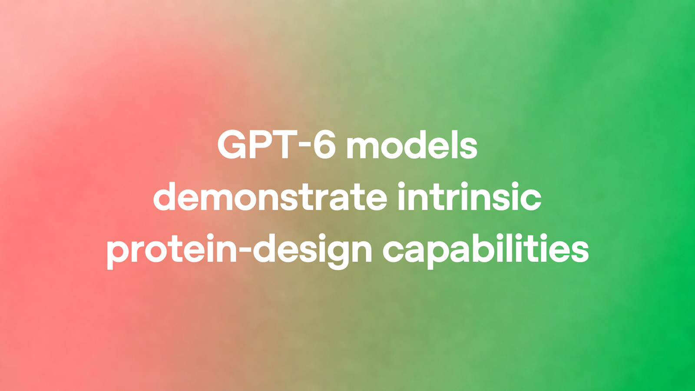

01
OpenAI reports protein-design capabilities in GPT-6

OpenAI reports that GPT-6 models can design protein structures and sequences through reasoning and code, with laboratory tests finding evidence of binding across five targets. The announcement extends general-purpose model applications into experimental biology. Binding evidence is a meaningful validation step, but it should not be confused with clinical utility or broad drug-development success. The collected summary establishes the reported target count and approach without providing assay details, success rates or independent replication.